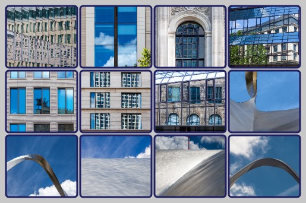
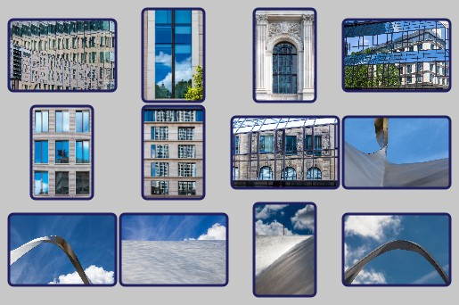
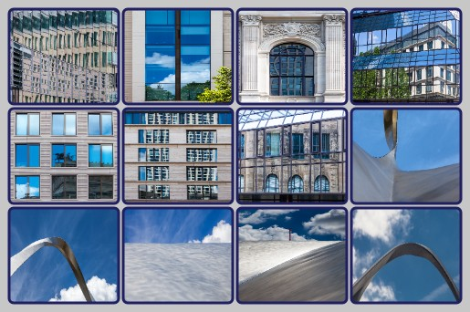
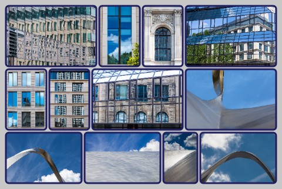
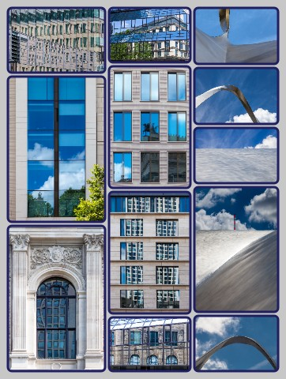

JavaScript Anwendung zur Zusammenstellung von mehreren Bildern zu einem Poster
v2.2 2024-06-03 (c) RannerDesign, MIT License
Aufbau einer Bilddatei ("Poster") im jpeg-Format, die aus mehreren Einzelbildern zusammengesetzt ist. Die Einzelbilder können dabei beliebige Seitenverhältnisse besitzen. Die Kombination erfolgt entweder als Raster mit vorgegebener Anzahl Zeilen und Spalten oder in Form horizontaler oder vertikaler Streifen, bei denen die Einzelbilder auf gleiche Höhe bzw. Breite skaliert werden.
Die Anwendung wird als HTML-Dokument auf einem Webserver bereitgestellt. Eine Installation ist nicht erforderlich. Voraussetzung zur Nutzung ist ein Web-Browser mit JavaScript-Unterstützung. Die Anwendung ist getestet mit Google Chrome 125, FireFox 126 und Safari IOS 17.5, sollte aber auf den meisten gängigen Browsern lauffähig sein.
Folgende Ideen und Programme anderer Autoren wurden unter Berücksichtigung der jeweiligen Lizenzbedingungen für diese Anwendung eingesetzt:
dom-to-image (c) 2015 Anatolii Saienko, MIT License, https://github.com/tsayen/dom-to-image
Verbesserter Algorithmus basierend auf einem Dynamic Programming Ansatz von fedja, https://mathoverflow.net/questions/473701/
Für die Auswahl von Bildern, die verwendet werden sollen, stehen 2 Möglichkeiten zur Verfügung:
durch Ziehen von einem oder mehreren Bildern aus dem Explorer in die gestrichelt umrandete Fläche
durch Klicken in diese Flächen und Nutzung des danach geöffneten Dateiauswahldialogs
Nach der Bildauswahl wird die Anzahl Bilder rechts neben der gestrichelt umrandeten Fläche angezeigt. Zusätzlich wird im unteren Bereich der Webseite die Liste der ausgewählten Dateinamen angezeigt.
Falls versehentlich Bilder ausgewählt wurden, kann die gesamte Auswahl durch die Schaltfläche Auswahl löschen entfernt werden. Einzelne Bilder können so nicht gelöscht werden, sondern erst nach dem Laden von Bildern (s. Schritt 2)
Die Schaltfläche Hilfe zeigt diese Programmbeschreibung an.
Mit Hilfe der Schaltfläche Bilder laden werden alle ausgewählten Bilder in das Programm geladen. Während des Ladevorgangs erscheint neben der Schaltfläche ein roter Punkt und die Anzeige der noch zu ladenden Bilder. Nach Abschluss des Ladevorgangs entfällt die Anzeige der ausgewählten Bilder unter Schritt 1 und die Liste am unteren Ende der Webseite.
Dafür wird jetzt am unteren Ende der Webseite die Liste der geladenen Bilder angezeigt, jeweils mit kleinem Bild und den wichtigsten Metadaten. In dieser Liste können einzelne Bilder gelöscht (Klick auf den Papierkorb daneben) oder verschoben werden, um die Reihenfolge zu ändern. Das Verschieben erfolgt mittels Drag-and-Drop, in dem ein Bild angeklickt und bei gedrückter Maustaste auf ein anderes Bild gezogen wird.
Die Sequenz 1. Bilder auswählen und 2. Bilder laden kann beliebig oft nacheinander ausgeführt werden, um Bilder in Gruppen zu laden, bzw. dazwischen auch einzelne Bilder wieder zu löschen oder die Reihenfolge verändern. Auch wenn schon die Funktion 6. Poster erstellen ausgeführt wurde, können weitere Bilder geladen oder vorhandene wieder entfernt werden.
Mittels Schaltfläche Bilder löschen werden alle geladenen Bilder entfernt. Einzelne Bilder können in der Liste am Ende der Seite gelöscht werden.
Die Anwendung unterstützt 3 verschiedene Arten ("Poster-Typ") im Aufbau des Posters.
Diese sind nachfolgend beschrieben, wobei bereits die Besonderheiten einiger Parameter aus Schritt 5 erläutert werden.
Dieser Poster-Typ ist vor allem für Bildmaterial geeignet, das aus einheitlichen Seitenverhältnissen der Bilder besteht. Die Struktur des Posters entspricht einer Tabelle mit gegebener Anzahl Zeilen und Spalten.

Als Parameter werden zunächst Anzahl Spalten und Anzahl Zeilen benötigt. Sofern eine Zeilenzahl nicht angegeben wird, werden so viele Zeilen generiert, um alle geladenen Bilder anzuzeigen. Sofern Anzahl Zeilen und Spalten angegeben werden, wird das Poster mit diesen Zahlen generiert. Wenn die Anzahl geladener Bilder nicht ausreicht, entstehen leere Flächen im Poster. Wenn die Anzahl geladener Bilder größer ist als (Anzahl Zeilen * Anzahl Spalten) werden die übrigen Bilder nicht ins Poster übernommen.
Alle einzelnen Bilder werden in einem gleich dimensionierten Rechteck dargestellt. Dieses wird durch Einzelbild Breite, Einzelbild Höhe und Seitenverhältnis (Breite : Höhe) bestimmt. Werden Breite und Höhe angegeben, sind diese Angaben maßgeblich und eine zusätzliche Eingabe bei Seitenverhältnis ignoriert.
Wird nur eine Angabe, d.h. Breite oder Höhe, gemacht, errechnet sich die fehlende Größe über das Seitenverhältnis.
Für das Seitenverhältnis sind verschiedene Eingaben möglich:
Dezimalzahl (mit Punkt oder Komma als Dezimaltrennzeichen)
Eine Angabe Breite : Höhe (z.B. "4:3")
"E": es wird das Seitenverhältnis des ersten Bildes der geladenen Liste verwendet
"L": es wird das Seitenverhältnis des letzten Bildes der geladenen Liste verwendet
"D": es wird der arithmetische Durchschnittswert der Seitenverhältnisse aller geladenen Bilder verwendet
"M": es wird das Seitenverhältnis verwendet, das bei den meisten geladenen Bildern vorkommt
Wenn das Seitenverhältnis leer gelassen wird, wird "D" angenommen.
Da beim Poster-Typ Raster als Platz für alle Bilder das gleiche Rechteck verwendet wird, muss für Bilder, deren Seitenverhältnis nicht diesem Rechteck entsprechen, entschieden werden, wie das Einzelbild in das Rechteck eingepasst wird. Hierfür stehen 3 Optionen zur Verfügung:
Originalverhältnis

Hier wird das gesamte Bild dargestellt unter Erhalt seines Seitenverhältnisses, dies hat zur Folge, dass das Rechteck u.U. nicht vollständig ausgefüllt wird und oben und unten bzw. rechts und links leere Flächen mit Hintergrundfarbe entstehen
Ausfüllen

Hier wird das gesamte Bild dargestellt, wobei das Seitenverhältnis nicht erhalten bleibt, sondern Breite und Höhe des Einzelbildes auf die Größe des Rechtecks skaliert wird. Dies hat u.U. eine erhebliche Verzerrung zur Folge
Ausschnitt
Hier wird ein Teil des Einzelbildes dargestellt unter Erhalt des Seitenverhältnisses. Dadurch wird das gesamte Rechteck ausgefüllt und gleichzeitig eine Verzerrung vermieden. Der Zuschnitt erfolgt mittenzentriert, so dass rechts und links bzw. oben und unten etwas vom Originalbild fehlt
Dieser Poster-Typ ist gut geeignet für Bildmaterial mit sehr unterschiedlichen Seitenverhältnissen. Die Bilder werden in horizontalen Streifen angeordnet, somit haben alle Bilder in einem Streifen die gleiche Höhe.

Bilder im Hochformat sind damit etwas "benachteiligt", da sie weniger Fläche erhalten als Bilder im Querformat. Die verschiedenen Streifen können unterschiedlich hoch sein, da sie immer so skaliert werden, dass die Posterbreite vollständig ausgenutzt wird.
Bei diesem Poster-Typ ist nur die Gesamtbreite des Posters exakt vorgebbar. Die Höhe kann nur ungefähr gewünscht werden, da für die Skalierung der Streifen auf Posterbreite und der damit einhergehenden Höhenveränderung Freiraum zur Anpassung notwendig ist.
Es kann allerdings auch auf die Angabe der Höhe verzichtet werden. Dann muss dafür entweder die Anzahl horizontaler Streifen vorgegeben werden oder die Bilder pro Zeile. Bei letzterer Angabe wird entweder eine Zahlenreihe getrennt durch Kommata oder Leerzeichen erwartet oder eine Angabe wie n * m bzw. n x m, wobei n die Anzahl Zeilen und m die Anzahl Bilder pro Zeile repräsentiert.
Die Höhe ergibt sich dann durch die Berechnung.
Dieser Poster-Typ ist ebenfalls gut geeignet für Bildmaterial mit sehr unterschiedlichen Seitenverhältnissen. Die Bilder werden in vertikalen Streifen angeordnet, somit haben alle Bilder in einem Streifen die gleiche Breite.

Bilder im Querformat sind damit etwas "benachteiligt", da sie weniger Fläche erhalten als Bilder im Hochformat. Die verschiedenen Streifen können unterschiedlich breit sein, da sie immer so skaliert werden, dass die Posterhöhe vollständig ausgenutzt wird.
Bei diesem Poster-Typ ist nur die Gesamthöhe des Posters exakt vorgebbar. Die Breite kann nur ungefähr gewünscht werden, da für die Skalierung der Streifen auf Posterhöhe und der damit einhergehenden Breitenveränderung Freiraum zur Anpassung notwendig ist.
Es kann allerdings auch auf die Angabe der Breite verzichtet werden. Dann muss dafür entweder die Anzahl vertikaler Streifen vorgegeben werden oder die Bilder pro Spalte. Bei letzterer Angabe wird entweder eine Zahlenreihe getrennt durch Kommata oder Leerzeichen erwartet oder eine Angabe wie n * m bzw. n x m, wobei n die Anzahl Spalten und m die Anzahl Bilder pro Spalte repräsentiert.
Die Breite ergibt sich dann durch die Berechnung.
Welcher Poster-Typ der beste für eine gegeben Menge an Bildern ist, ist Geschmackssache und kann oft nur durch Probieren herausgefunden werden. Manchmal hilft auch eine Verschiebung in der Bildreihenfolge, um bessere Wirkung zu erzielen.
Die Erzeugung der jpeg-Datei für das Poster kann mit dieser Anwendung technisch auf 2 verschiedenen Wegen erfolgen. Dies schien anfänglich erforderlich, da verschiedene Browserversionen unterschiedliches Verhalten zeigten und bei großer Anzahl Bilder unterschiedliche Performanceeinbußen resultierten. Dieses Verhalten ist mittlerweile nicht mehr der Fall, die beiden Ausgabeformate führen in den meisten Fällen zum nahezu exakt gleichen Ergebnis.
Beide Möglichkeiten werden dennoch parallel beibehalten, da es im Detail doch noch ein paar Unterschiede gibt, die nachfolgend beschrieben sind.
Dieses Ausgabeformat ist der Standardfall. Es erfüllt alle Grundfunktionen der Anwendung ohne Einschränkung.
Dieses Ausgabeformat bietet über die Grundfunktionen hinaus noch die Funktion Vergrößerung sowie die Möglichkeit, die ganze Datei im .html-Format zu speichern (s. 6. Punkt)
In diesem Abschnitt sind alle Parameter zusammen gestellt, mit der die Erzeugung des Posters gestaltet und beeinflusst werden kann. Einige Parameter wurden bereits im Abschnitt 3 beschrieben, da sie spezifisch für Poster-Typ sind.
Folgende Parameter sind für alle Varianten gültig:
Posterränder: Randabstand der Bilder in Pixel Bei Eingabe von einer Zahl ist dies der Abstand oben, rechts, unten und links. Bei Eingabe von 2 durch Komma getrennte Zahlen bestimmt die erste den Randabstand oben und unten und die zweite rechts und links. Bei Eingabe von 3 durch Kommata getrennte Zahlen bestimmt die erste oben, die zweite rechts und links und die dritte unten. Bei Eingabe von 4 durch Kommata getrennten Zahlen bestimmen diese die Randabstände in der Reihenfolge oben, rechts, unten, links.
Bildzwischenraum: Abstand zwischen den Einzelbildern in Pixel Bei Eingabe einer Zahl gilt dies sowohl für horizontale wie vertikale Abstände, bei 2 durch Komma getrennten Zahlen bestimmt die erste den horizontalen und die zweite den vertikalen Abstand.
Hintergrundfarbe: Farbwahlmöglichkeit als RGB, HSL oder hex definiert die Hintergrundfarbe des gesamten Posters.
Rahmenstärke: Dicke des Rahmens um das Einzelbild in Pixel
Rahmenmuster / Rahmenstil: Hier gibt es Unterschiede abhängig vom Ausgabeformat.
Im Falle Canvas kann hier nur ein Linienmuster (z.B. für gestrichelte Linien) eingetragen werden. Dieses besteht aus einer oder mehreren durch Leerzeichen oder Kommata getrennten Zahlen. Die einzelnen Zahlen stellen Pixelangaben dar. Ist die Anzahl der Zahlen ungerade, wird die Zahlenreihe nochmals an sich angehängt, so dass nun eine gerade Anzahl vorliegt. Die Zahlen werden dann abwechselnd als Längenangaben für Strich und Zwischenraum der Linie interpretiert.
Im Falle HTML kann der Rahmenstil aus einer Auswahlliste selektiert werden. Die angebotenen Optionen werden typischerweise zur Gestaltung von Webseiten verwendet. Inwieweit insbesondere die spezielleren Optionen sich zur Postergestaltung eignen, kann nur durch Ausprobieren festgestellt werden.
Rahmenfarbe: Farbwahlmöglichkeit als RGB, HSL oder hex definiert die Farbe des Rahmens um das Einzelbild.
Eckenrundung: Rundungsradius aller Ecken in Pixel
Postername: Hier kann ein Name für das Poster-Fenster angegeben werden. Falls leer, wird als Name posterX verwendet, wobei X=1, 2 oder 3 den drei Poster-Typen entspricht. Bei erneuter Poster-Erzeugung wird das Poster-Fenster jeweils wiederverwendet und überschrieben. Will man mehrere Posterentwürfe ohne jpeg-Ausgabe vergleichen kann man dies erreichen, indem man jeweils vor der Erzeugung einen neuen Posternamen vergibt. Dann wird für jeden Posternamen ein neues Fenster erstellt.
Ausgabequalität: Dezimalzahl (mit Punkt oder Komma als Dezimaltrennzeichen) zwischen 0 und 1, die die jpeg-Qualität und damit indirekt die Dateigröße beeinflusst. Voreinstellung ist 0,90.
Mit der Schaltfläche Poster anzeigen erfolgt die Erstellung des Posters. Dies erfolgt in einem eigenen Fester, das neu entsteht oder - bei Folgeaufrufen - wiederverwendet wird. Da das Fenster wiederverwendet wird, sollte man es schließen, wenn sich die Außenmaße des Posters ändern. Ansonsten muss man es manuell auf die richtige Größe bringen.
Die Anzeige im Fenster dient primär zur Prüfung des Ergebnisses, so dass ggf. Programmoptionen, Parameter oder Bildreihenfolgen geändert werden können. Zudem ist der angezeigte Zustand die Basis für die nachfolgende Funktion Poster speichern.
Im Ausgabeformat HTML besitzt dieses Fenster darüber hinaus noch Zusatzfunktionen:
Vergrößerung: Durch Klicken auf ein Einzelbild erscheint dieses vergrößert, zudem kann man durch die Bilderreihe navigieren mit den Tasten Pfeil-rechts, Pfeil-links, Bild-hoch, Bild-runter, Pos1 und End oder durch Klick auf die entsprechenden Schaltflächen. Man hat somit gleich eine kleine Bildergalerie.
Speichern als HTML: Mit der Tastenkombination Strg+s kann das Poster mit der zuvor beschriebenen Funktionalität als HTML-Datei gespeichert werden. Die ausgegebene .html-Datei enthält alle verwendeten Bilder in voller Auflösung, dadurch ist der Speicherplatzbedarf dieser Datei ein Vielfaches der korrespondierenden jpeg-Datei. Die .html-Datei kann lokal verwendet und im Browser angezeigt oder aber auch auf einem Webspace im Internet bereitgestellt werden. Diese Funktion sollte nicht mit der nachfolgend beschriebenen Funktion Poster speichern verwechselt werden.
Mit der Schaltfläche Poster speichern kann das Poster als jpeg-Datei gespeichert werden. Als Dateiname wird der Postername vorgeschlagen, kann jedoch durch Eingabe überschrieben werden.